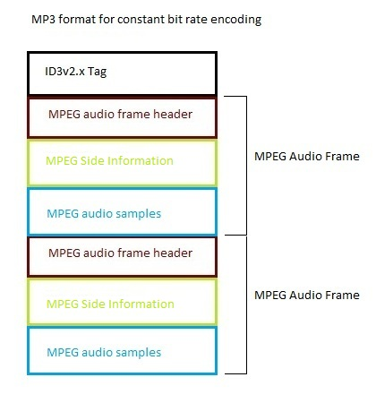
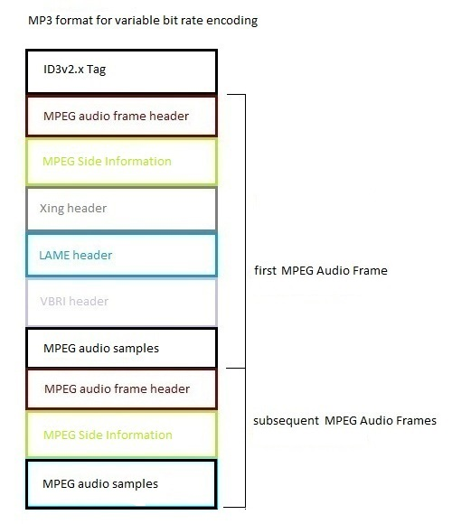

- java.lang.Object
-
- com.beaglebuddy.mpeg.MPEGFrame
-
public class MPEGFrame extends java.lang.Object

The actual audio data for an .mp3 file is stored in MPEG audio frames. Depending on how an .mp3 file was encoded (either
CBR or VBR), the format of the first MPEG audio frame may be different. All subsequent MPEG audio frames will have the same format regardless of how the .mp3 file was encoded. The two formats are shown below:  All MPEG audio frames consists of a
header, someside information, followed by the actualdigital audio sampleswhich is what you hear when you play an .mp3 file. The first MPEG audio frame of a variable bitrate (VBR) encoded .mp3 may contain optional headers (Xing,LAME, andVBRI) which are sandwiched between the MPEG side information and the MPEG audio samples as shown in the diagram above.- See Also:
- ISO / IEC 11172-3, MPEG Format, MPEG Format
-
-
Constructor Summary
Constructors Constructor and Description MPEGFrame()default constructor.MPEGFrame(byte[] data, java.io.InputStream inputStream)constructor used to search for and read in the 1st mpeg audio frame from an .mp3 file or to re-synch the mpeg audio frames.MPEGFrame(java.io.InputStream inputStream)constructor used to read in subsequent mpeg audio frames after the first frame from an .mp3 file.
-
Method Summary
Methods Modifier and Type Method and Description intgetFilePosition()get the offset (in bytes) within the .mp3 file where the MPEG audio frame occurred.LAMEHeadergetLAMEHeader()get the optional LAME header.MPEGFrameHeadergetMPEGFrameHeader()get the mpeg audio frame header.intgetSize()get the size (in bytes) of the MPEG audio frame.VBRIHeadergetVBRIHeader()get the optional VBRI header.XingHeadergetXingHeader()get the optional xing header.voidsetFilePosition(int filePosition)set the byte offset within the .mp3 file where the MPEG audio frame occurred.java.lang.StringtoString()gets a string representation of the mpeg audio frame.
-
-
-
Constructor Detail
-
MPEGFrame
public MPEGFrame()
default constructor.
-
MPEGFrame
public MPEGFrame(java.io.InputStream inputStream) throws java.io.IOException, ParseExceptionconstructor used to read in subsequent mpeg audio frames after the first frame from an .mp3 file.- Parameters:
inputStream- input stream to read in the binary .mp3 file.- Throws:
java.io.IOException- if there is an error while reading the mpeg audio frame.ParseException- if an invalid value is detected while parsing the mpeg frame's raw bytes.
-
MPEGFrame
public MPEGFrame(byte[] data, java.io.InputStream inputStream) throws java.io.IOException, ParseExceptionconstructor used to search for and read in the 1st mpeg audio frame from an .mp3 file or to re-synch the mpeg audio frames.- Parameters:
data- bytes read in from the .mp3 file while searching for the first mpeg audio frame. These bytes will be checked to see if they are a valid MPEG audio frame header.inputStream- input stream to read in the binary .mp3 file.- Throws:
java.io.IOException- if there is an error while reading the mpeg audio frame.ParseException- if an invalid value is detected while parsing the mpeg frame's raw bytes.
-
-
Method Detail
-
getMPEGFrameHeader
public MPEGFrameHeader getMPEGFrameHeader()
get the mpeg audio frame header.- Returns:
- the mpeg audio frame header.
-
getXingHeader
public XingHeader getXingHeader()
get the optional xing header. The Xing header is found invariable bitrateencoded .mp3 files with an id of "Xing". It can sometimes be found inconstant bitrateencoded .mp3 files with an id of "Info". The Xing header is mutually exlusive with the VBRI header. That is, if an Xing header is present, then a VBRI header will not be present. Conversely, if a VBRI header is present, then an Xing header will not be present. Only one of the two may appear in the first mpeg audio frame of a VBR encoded .mp3 file.- Returns:
- the optional xing header.
-
getLAMEHeader
public LAMEHeader getLAMEHeader()
get the optional LAME header. The LAME header, if present, is found invariable bitrateencoded .mp3 files directly following an Xing header.- Returns:
- the optional LAME header.
-
getVBRIHeader
public VBRIHeader getVBRIHeader()
get the optional VBRI header. The VBRI header is found only invariable bitrateencoded .mp3 files. The VBRI header is mutually exlusive with the Xing header. That is, if an VBRI header is present, then an Xing header will not be present. Conversely, if a Xing header is present, then a VBRI header will not be present. Only one of the two may appear in the first mpeg audio frame of a VBR encoded .mp3 file.- Returns:
- the optional VBRI header.
-
getFilePosition
public int getFilePosition()
get the offset (in bytes) within the .mp3 file where the MPEG audio frame occurred.- Returns:
- the offset (in bytes) within the .mp3 file where the MPEG audio frame starts.
-
setFilePosition
public void setFilePosition(int filePosition)
set the byte offset within the .mp3 file where the MPEG audio frame occurred.- Parameters:
filePosition- the byte offset within the .mp3 file where the MPEG audio frame starts.
-
getSize
public int getSize()
get the size (in bytes) of the MPEG audio frame.- Returns:
- the size (in bytes) of the MPEG audio frame.
-
toString
public java.lang.String toString()
gets a string representation of the mpeg audio frame.- Overrides:
toStringin classjava.lang.Object- Returns:
- a string representation of the mpeg audio frame.
-
-